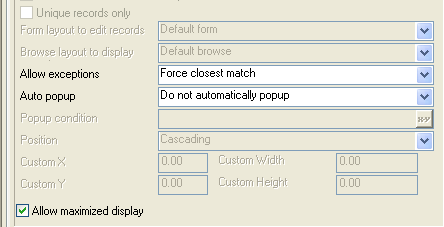

Field Rules Table Lookups
The value of using field rules to populate a list is that the rules are associated with the data, and consequently, the rules automatically influence the way a form or browse displays the data.
The following screen shot shows the Table Lookup form with type-in controls which display lists based on the Vendor and Product tables. These controls provide two operating modes:
Popup window with list
Combo box-like drop-down list

 NOTE : The List and
Combo box controls are not available for use
with field rules.
NOTE : The List and
Combo box controls are not available for use
with field rules.
Defining the Vendor Lookup
The Lookups tab of the Field Rules Editor shows how you configure the Vendor form field to produce a list of vendor_name field values, while storing the corresponding vendor_no value into the quote_vendor_no_FR field.
Return to the Control Panel and display the Table/Sets tab.
Select the Table_Lookups table and right click.
Select Edit Field Rules... .
Select the "Quote_Vendor_No_FR" field in the drop-down list at the top of the screen.
Display the Lookups tab.
Select "Table Lookup" in the Lookup styles list.
Select "vendor.dbf" in the Table list.
Select "Vendor_No" in the Linking Field list. This is the value that the Table_Lookups table will store.
Select "Vendor_Name" in the Display Order control. This sorts the results alphabetically on the Vendor_Name field.
Skip the Filter control This query will return all of the records in the table.
The Source column defines the data that is retrieved from the Vendor table. The Fill column specifies that the vendor_no field is mapped to the quote_vendor_no_FR field of the Table_Lookups table. The Display column defines whether the Vendor fields are displayed on the form.
In the first line of the Source column select "Vendor->Vendor_Name".
In the first line of the Display column select "Yes".
In the second line of the Source column select "Vendor->Vendor_No".
In the second line of the Fill column select "Quote_Vendor_No_FR".
If you wish a two column display, in the second line of the Display column select "Yes". Otherwise, select "No".
Select Display as drop-down list box.
Since the user is selecting from a pre-defined list, the Allow Exceptions control selection is "Force closes match". This configuration does not use a popup window, so the Auto popup control is ignored. The Allow Maximize display control allows popup windows to maximize if the underlying form is maximized. In this context it is ignored.
Defining the Product Lookup
The Lookups tab of the Field Rules dialog box shows how to configure the Product form field to produce a list of product_name field values, while storing the corresponding product_no value into the quote_product_no_FR field.
The Table control defines the source of the list data. The Filter control defines the relationship that must be satisfied to select a record from the Product table. The expression " product_vendor_no = table_lookups->quote_vendor_no " means that the product_vendor_no field equals the quote_vendor_no field in the Table_Lookup table.
 NOTE : The expression
table_lookups->quote_vendor_no means that
you are specifying the quote_vendor_no in the
Table_Lookups table. It is important to use this
fully-qualified field definition. The reason is that the lookup is based
on the Product table. The fields of the Table_Lookups table are foreign to it.
NOTE : The expression
table_lookups->quote_vendor_no means that
you are specifying the quote_vendor_no in the
Table_Lookups table. It is important to use this
fully-qualified field definition. The reason is that the lookup is based
on the Product table. The fields of the Table_Lookups table are foreign to it.
Return to the Control Panel and display the Table/Sets tab.
Right click the table and select Edit Field Rules... .
Select the "Quote_Product_No_FR" field in the drop-down list at the top of the screen.
Display the Lookups tab.
Select "Table lookup" in the Lookup style list.
Select "product.dbf" in the Table list.
Enter "Product_No" in the Linking Field list. This is the value that the Table_Lookups table will store.
In the Filter control enter " Product_vendor_No = table_lookups->quote_vendor_no_fr ". This restricts the records returned to those where Product_vendor_no equals quote_vendor_no_fr.
The Source fields defines the data that is retrieved from the Product table. The Fill field specifies that the product_no field is mapped to the quote_product_no field of the Table_Lookup table. The Display fields define whether the Product table fields are displayed on the form.
Select "Product->Product_Name" in the first line of the Source column.
Select "Yes" in the first line of the Display column.
Select "Product->Product_No" in the second line of the Source column.
Select "Quote_Product_No" in the second line of the Fill column. This is the data that is stored in the Table_Lookups table.
Select "No" in the second line of the Display column.
Select "Product->Product_Symbol" in the third line of the Source column.
Select "Yes" in the third line of the Display column.
Select Display as drop-down list box.

Since the user is selecting from a pre-defined list, the Allow Exceptions list selection is "Force closest match". This configuration does not use a popup window, so the Auto popup field is ignored. Allow Maximize display field allows popup windows to maximize if the underlying form is maximized. In this context it is ignored.
Supported By
Alpha Five Version 7 and Above